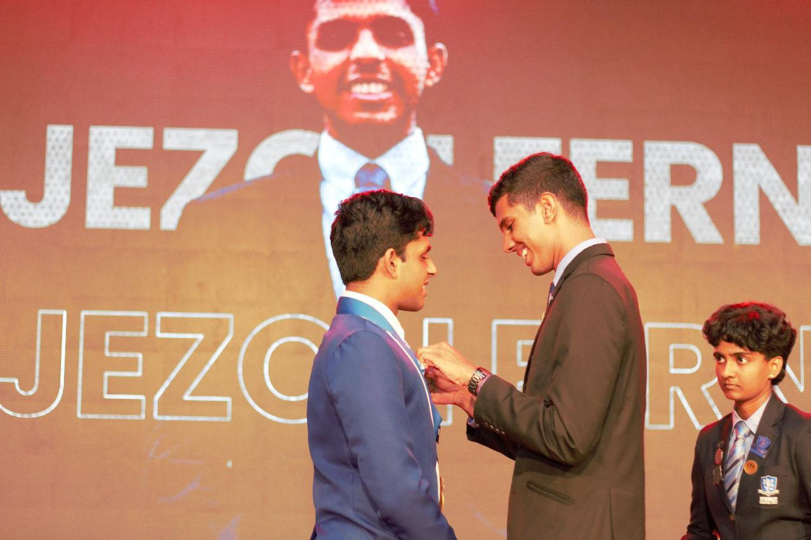
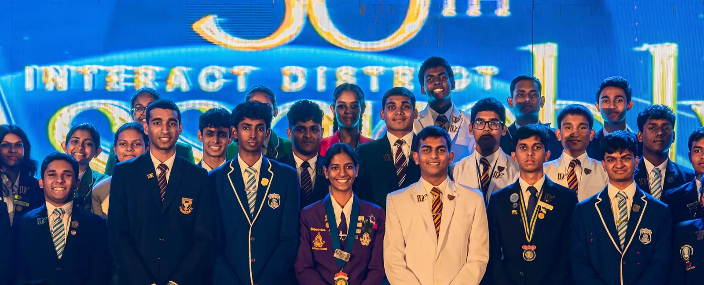

Interflash
10,000+
Guests
A concert on a ten thousand seat scale.
The district's largest public event, staged and run end to end by school students.
Interact District 3220 · Concept direction
One direction now, not three. The blueprint structure is the ground and the photography sits on top of it as floating panels. Use the picker to drive palette, type, shape and accent, and to switch between the two hero treatments. Everything below is live: the accordion opens, the flagships pan sideways under a pin, the stats roll, and the cursor morphs onto every pill.

Fig. 01 · District 3220 · Sri Lanka and Maldives · Est. 1964
Youth-led service across Sri Lanka and the Maldives.

Fig. 01 · District 3220 · Sri Lanka and Maldives · Est. 1964
Youth-led service across Sri Lanka and the Maldives.
Each one is planned, funded and run by school students, with the council behind them and Rotary alongside.
Interflash
Guests
The district's largest public event, staged and run end to end by school students.
DIMUN
Committees
District Interact Model United Nations, with its own committees, topics and study guides.
Race4Change
Galle Face Green
Open registration and corporate teams, raising funds for children's cardiac care.
Every club project sits under one of these. Hover to open, click to lock.Tap one to open it.
Assemblies, training, media crew and club projects across nine zones.
The working side of the district. Dates, documents, records and the people who run them.
Tell the council where you are and who is interested. Chartering a new Interact club takes one conversation to begin.
Still missing photography. Interflash and Race4Change have no images in the repo, so both use clearly-marked Picsum stand-ins. Each of the five avenues also needs its own photograph; the accordion currently borrows district and media-crew shots.
Effects from lab.damiandc.com: Floating Panels, Horizontal Journey, Accordion Gallery, Odometer Roll, Line Draw, Morph Cursor, Iris. Nine zones removed as requested.
The morph cursor hides the native pointer on fine-pointer devices. It is off on touch and under reduced motion, and keyboard focus rings are untouched. Toggle it above if you want to compare.